Customer Need
Need
Simplified, efficient, and inclusive flow-building experience.
Goal
Improve usability for all users, especially those with sight impairments.
Use Case
Provide a simpler canvas with less scrolling and better navigation.
The Process
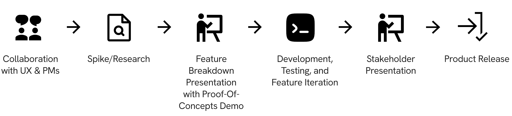
UX Deliverables
1. Update the Icon
Convert the icon to a that animates on load, hover, focus states, and in cut mode.
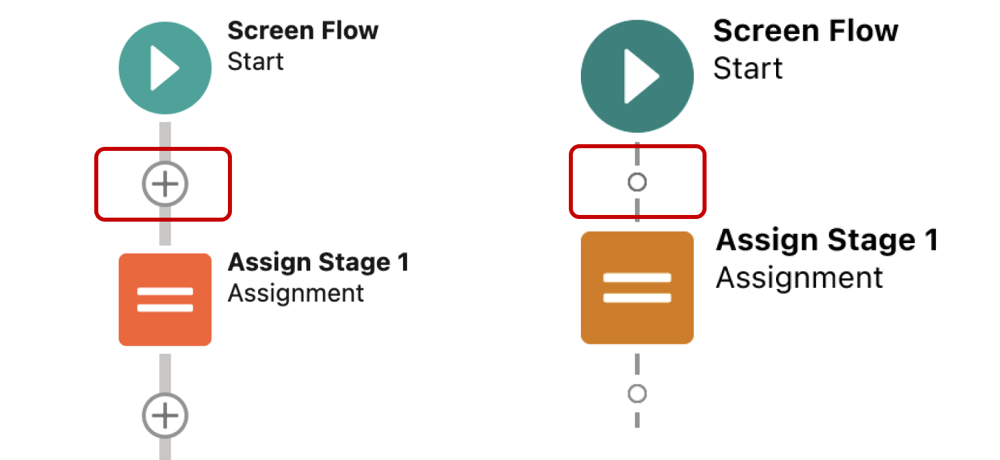
2. Add Help Popover
Introduce a help popover to guide users through the visual changes.
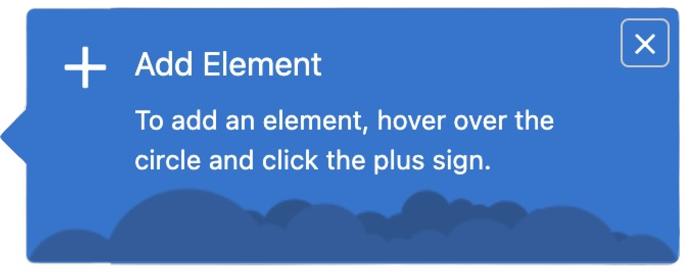
3. Shorten Vertical Node Distance
Reduce the spacing between vertical nodes for better visual flow.
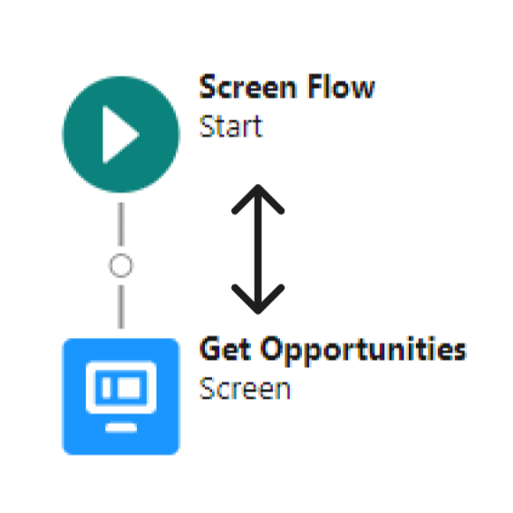
4. Reduce Connector Width
Decrease the width of connectors for a cleaner, more modern look.
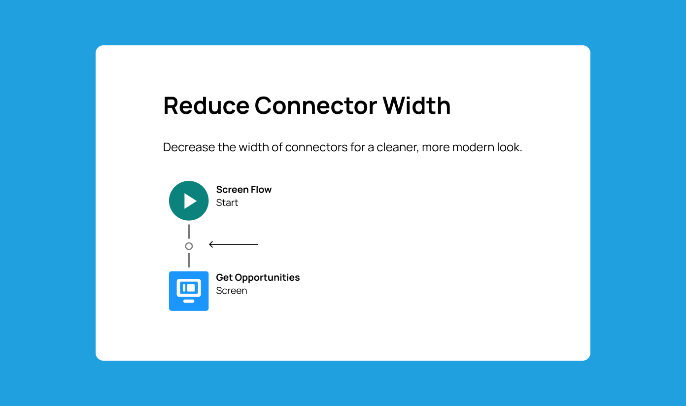
5. Increase Contrast
Enhance the contrast of nodes and connectors for better visibility.
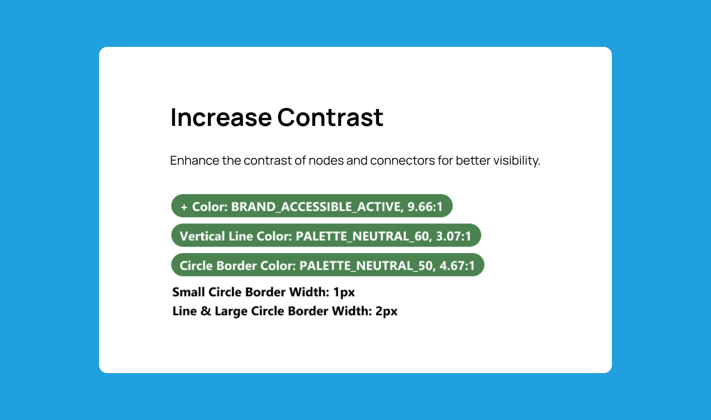
Deliverable 2
Add Help Popover
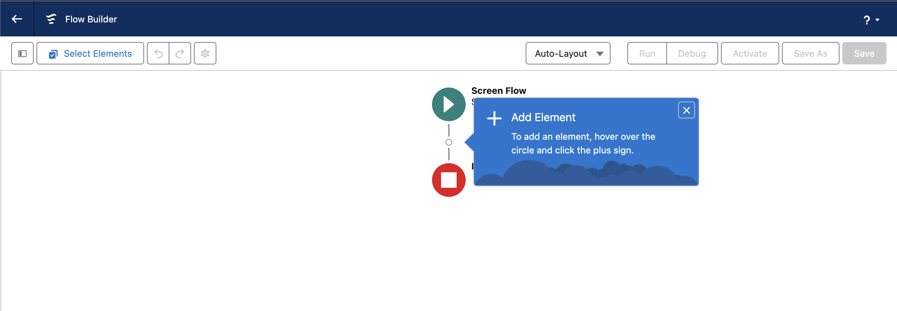
Popover Requirements
Display only once per user.
Stay anchored to the first circle icon, even when the flow moves.
To close, the user has to click the X button or press the Esc key.
Appear on the right of the circle icon.
Popover Roadblock & Solution
When working on a proof of concept, I faced a challenge when the popover wouldn't stay anchored as the flow moved.
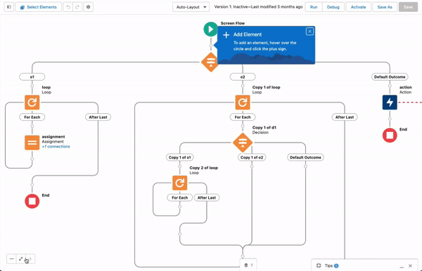
When the flow was dragged, the popover didn't follow.
Multiple attempts at a solution were made to resolve the three issues in keeping the popover anchored. However, no solution could not solve all three issues simultaneously.
Eventually, I sought the guidance of the Salesforce In-App Guidance team, and together, and collaborated with them in implementing a custom algorithm that kept the popover anchored during window resizes and shifts. This solution also improved the Flow's adaptability to different screen sizes and interactions, and maintained product scalability.
Deliverable 3
Shorten The Distance Between Vertical Nodes
Edge Cases
I accounted for different connector types (straight, curved, arrowed) and unique node shapes like diamond-shaped Decision elements, as well as icons with added borders that affected layout.
While the fix was a simple variable change, I had to ensure visual consistency throughout.
Connector Types
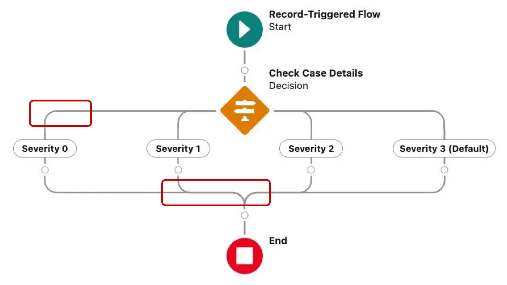
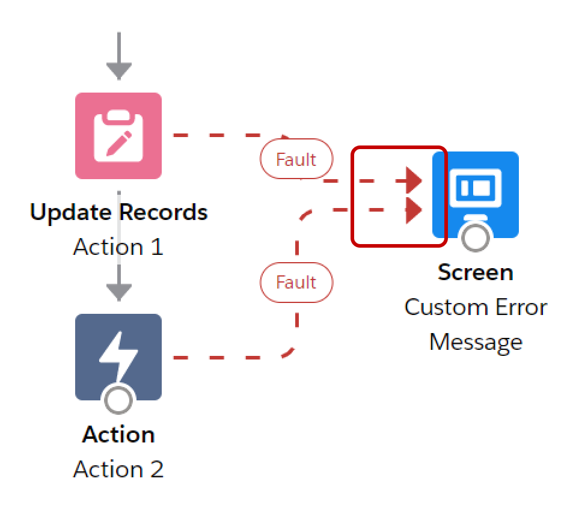
Different connector types - straight, curved, and with arrowed ends.
Node Types
Before: Original Flow Layout
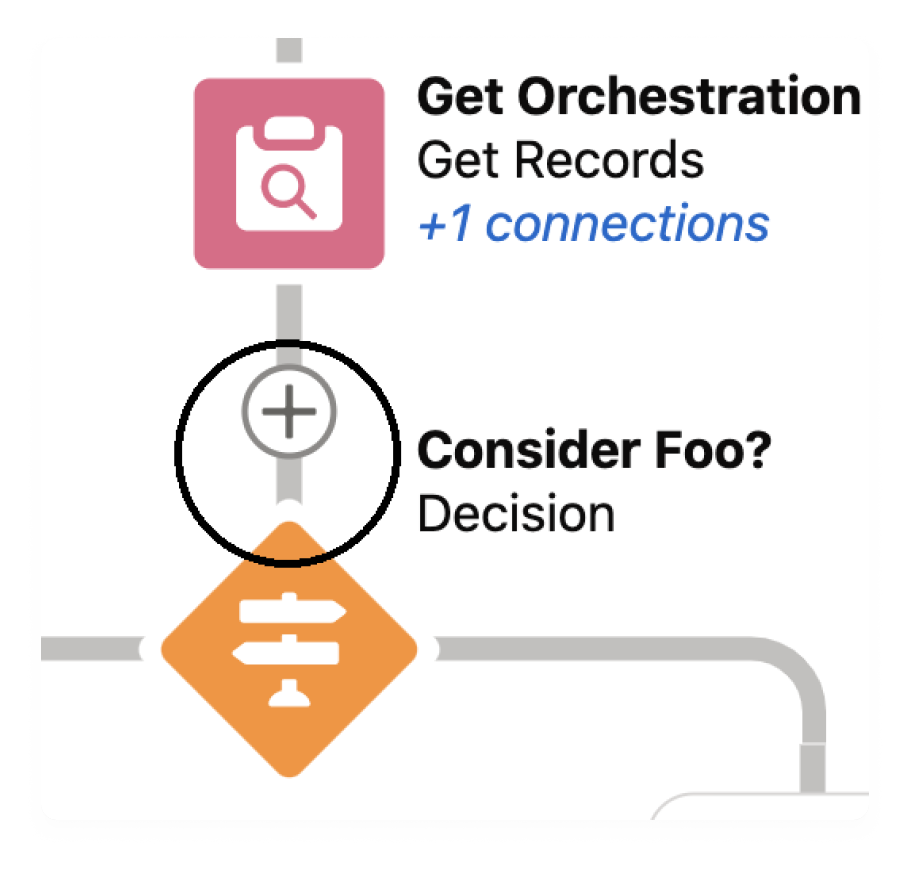
Initial layout with original spacing.
After: Adjusted Flow Layout
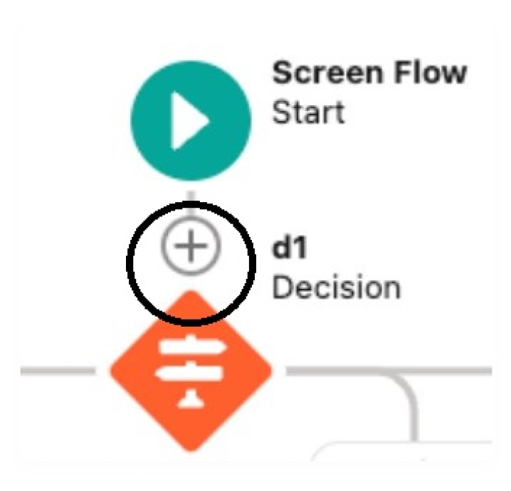
Adjusted layout without consideration for nodes with unique shapes.
Border Types
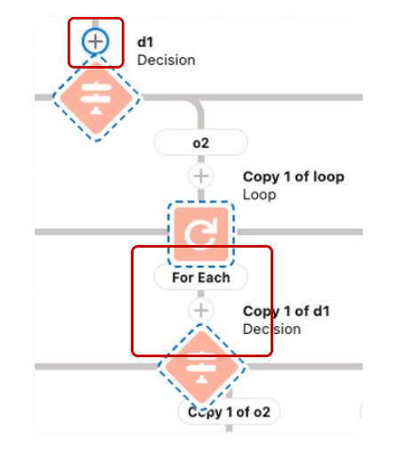
Icons with an added border, affecting layout consistency.
After several feedback sessions with the UX team, I adjusted the variable values to balance the feature's requirement with the unique needs of these edge cases.
Deliverable 4
Reduce The Width Of Connectors
Handling Complex Node and Connector Variations
During my research, I found that the previous requirement (Shorten The Distance Between Vertical Nodes) and this needed to be completed concurrently as one change without the other would result in interrupted and incohesive connector lines.
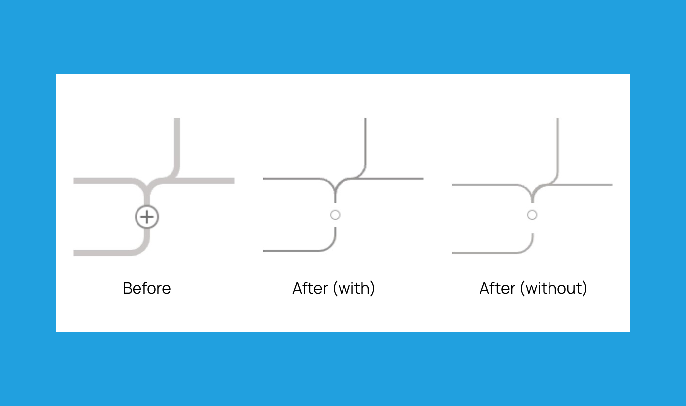
Hence, I decided that these two requirements had to be combined into a single code release.
Deliverable 5
Increase The Contrast Of Nodes And Connectors
Accessibility Changes & Requirements
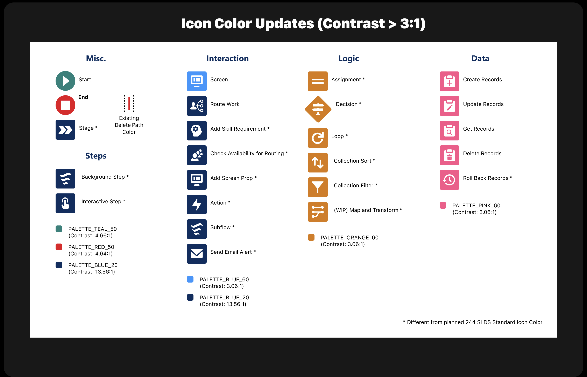
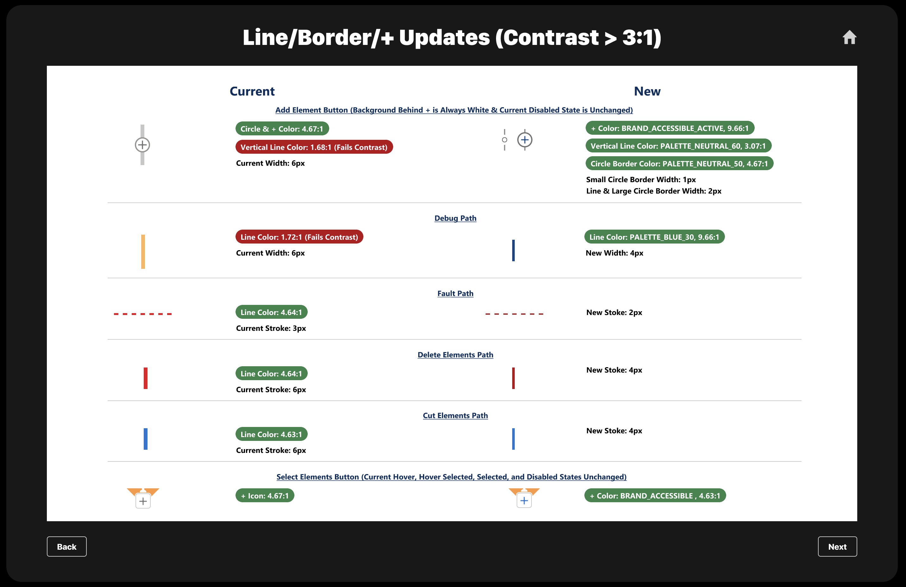
While the code changes were straightforward, they needed to be implemented across the entire codebase. I had to carefully map out and test every node and connector variation to ensure consistent behavior throughout the application.
This feature adjustment was particularly notable for me. Throughout my career, it was among the few tasks I undertook that highlighted a distinct interface-driven customer need. Addressing this made a direct positive impact on both productivity and inclusivity for its users.
Feature Comparison
The redesign modernized the interface with tighter spacing, thinner connectors, and high-contrast icons for better accessibility. These changes reduced scrolling and zooming, making it easier to work with complex flows while creating a more inclusive experience for all users.
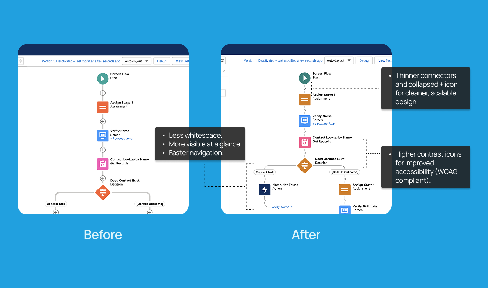
These changes came together in the Salesforce Summer 2023 release. The Flow Builder updates were spotlighted in multiple blogs and roundups, consistently ranking as one of the top features of that release.
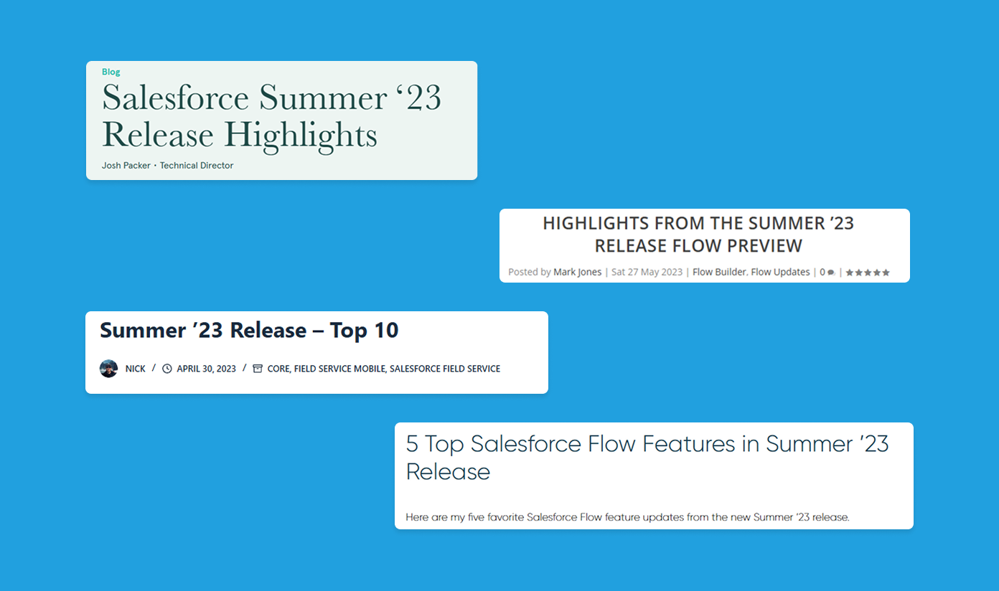
User Feedback & Praise
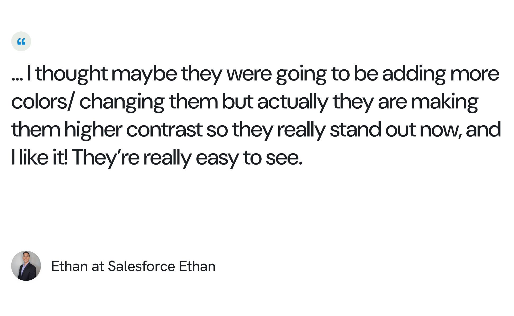
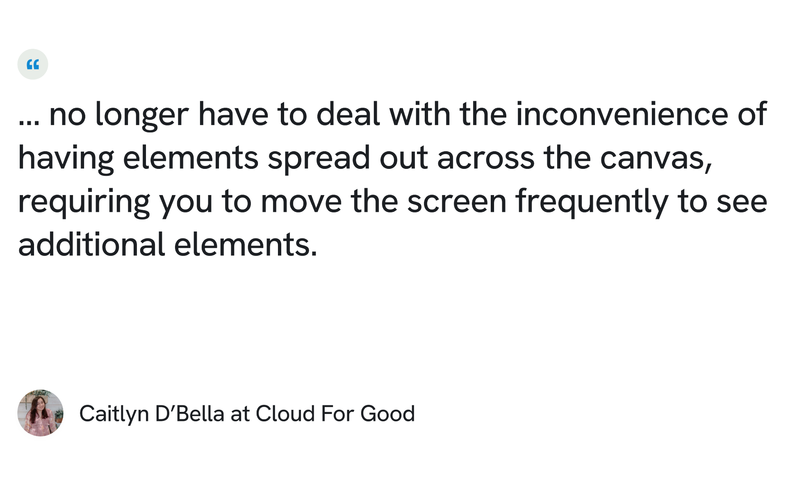
Insights & Takeaways
When I first took on the leadership role for this project, I grappled with self-doubt, often questioning my capabilities as the youngest Software Engineer on a seasoned team. My experience was marked by daily challenges, collaborative brainstorming and intensive problem-solving.
My manager and mentor played crucial roles in encouraging me to stay curious. I'll never forget the response I received to my apprehension about asking questions, which completely transformed my outlook on speaking up.
“You never know if someone also has the same question as you or if your question might offer a new perspective. By asking your question, you could be helping someone else too.”
Looking back at the successful impact of the feature on user productivity and accessibility, I'm deeply thankful for my team's unwavering support that fueled my confidence and determination to lead the project to its success.